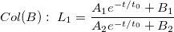
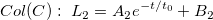
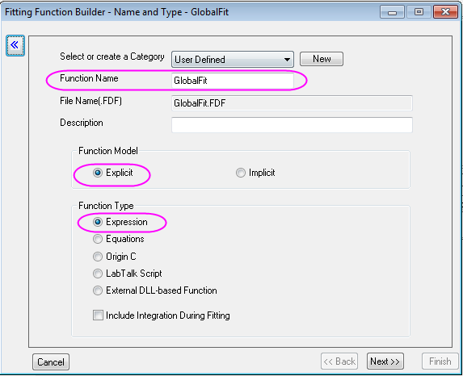
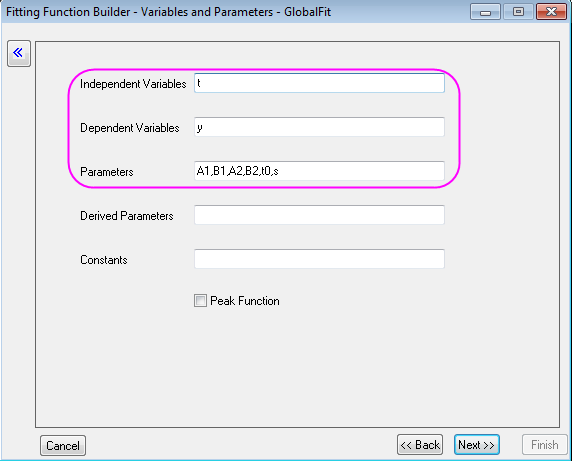
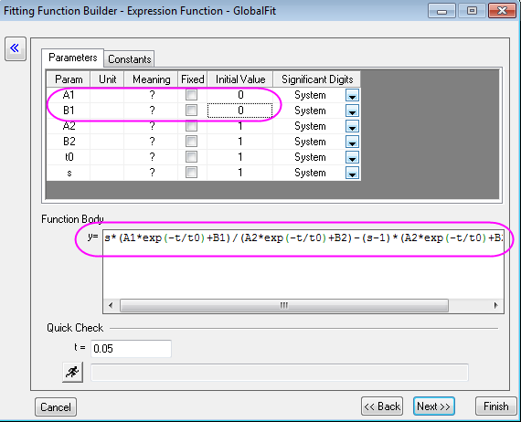
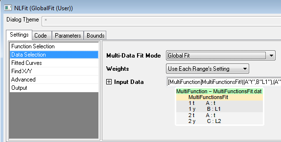
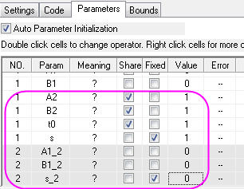
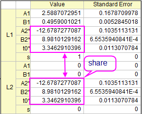
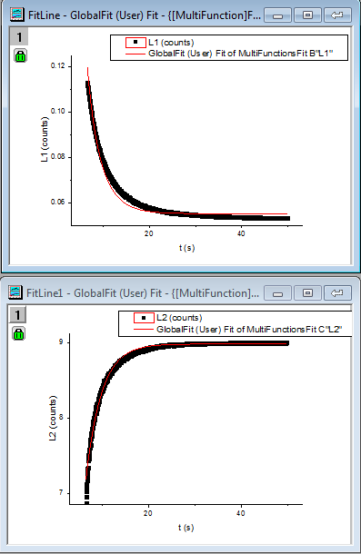

Globale Anpassung für unterschiedliche Funktionen mit gemeinsamen Parametern
Multi-Functions-Global-Fitting
Zusammenfassung
Dieses Tutorial soll das folgende Problem lösen: Eine globale Kurvenanpassung soll auf zwei oder mehr Kurven mit verschidenen Funktionen für jede Kurve durchgeführt werden, wobei aber einige gemeinsame Parameter verwendet werden. Der gemeinsame Parameter gilt für alle Datensätze. Dieses Problem entsteht in vielen wissenschaftlichen Arbeitsfeldern wie z.B. beim Anpassen von anisotropen Spektren.
Origin-Version mind. erforderlich: Origin 2015 SR1
Was Sie lernen werden
Dieses Tutorial zeigt Ihnen, wie Sie:
- mehrere Datensätze für eine globale Anpassung auswählen.
- einen Parameter festlegen, der alle Funktionen verbindet.
- eine globale Anpassung mit gemeinsamen Parametern für mehrere Anpassungsfunktionen durchführen.
Schritte
- Öffnen Sie eine neue Arbeitsmappe, indem Sie auf die Schaltfläche
 klicken.
klicken.
- Klicken Sie auf
 , um die Datei MultiFunctionsFit.dat aus dem Ordner <Origin-Verzeichnis>\Samples\Curve Fitting\ zu importieren.
, um die Datei MultiFunctionsFit.dat aus dem Ordner <Origin-Verzeichnis>\Samples\Curve Fitting\ zu importieren.
- Markieren Sie Spalte A, B und C und verwenden Sie Analyse: Anpassen: Nichtlinearer Fit... , um den Dialog NLFit zu öffnen.
Die benutzerdefinierte Anpassungsfunktion wird in den 3 folgenden Schritten erzeugt. Die Funktionen werden basierend auf dem untenstehenden quantitativen Modell erstellt:


- Wählen Sie auf der Seite Funktionsauswahl die Funktion <neu...> in der Kategorie User Defined.
- Geben Sie "GlobalFit" als Funktionname ein und legen Sie fest, dass das Funktionsmodell und der Funktionstyp dem Diagramm unten folgen:

Klicken Sie dann auf Weiter, um zur Seite der Variablen und Parameter zu gelangen.
- Legen Sie die Variablen und Parameter wie im Diagramm unten fest:

Klicken Sie dann auf Weiter, um zur Seite Ausdrucksfunktion zu gelangen.
- Geben Sie den Ausdruck, der die Formel von
 und
und  enthält, in das Feld des Funktionskörpers ein:
enthält, in das Feld des Funktionskörpers ein:
s*(A1*exp(-t/t0)+B1)/(A2*exp(-t/t0)+B2)-(s-1)*(A2*exp(-t/t0)+B2)
Der Parameter s ist eine Option für die globale Anpassung. Wenn s=1, wird für die Anpassung verwendet. Wenn s=0, wird für die Anpassung verwendet. Der Wert von s wird in der folgenden Anpassungsprozedur gesteuert. Legen Sie den Initialisierungswert von A1 und B1 auf 0. Klicken Sie dann auf die Schaltfläche Fertigstellen.

- Gehen Sie zurück zum Dialog NLFit und wählen Sie die Funktion GlobalFit in der Kategorie User Defined. Gehen Sie zur Seite Datenauswahl und wählen Sie Allgemeiner Fit (globaler Fit) in der Auswahlliste Fit-Modus für mehrere Datensätze:

- Wechseln Sie zur Registerkarte Parameter. Aktivieren Sie das Kontrollkästchen Teilen für A2, B2 und t0. Aktivieren Sie dann das Kontrollkästchen Fest für s und s_2, um ihre Werte mit 1 bzw. 0 festzulegen. Die Einstellung von s steuert die Anpassung von Col(B) mit Hilfe von , während für die Anpassung Col(C) verwendet wird.

- Klicken Sie auf die Schaltfläche Fit, um die Kurven anzupassen. Sie können diese Ergebnisse in der Tabelle Parameter des Berichtsblatts erhalten:

- Die angepassten Kurven werden zu der ursprünglichen Datenzeichnung hinzugefügt. Sie können die angepasste Kurve für Col(B)/ und Col(C)/ im Blatt GlobalFit (User) Fit of Multiple Dataset überprüfen, indem Sie doppelt auf die Diagramme klicken.
